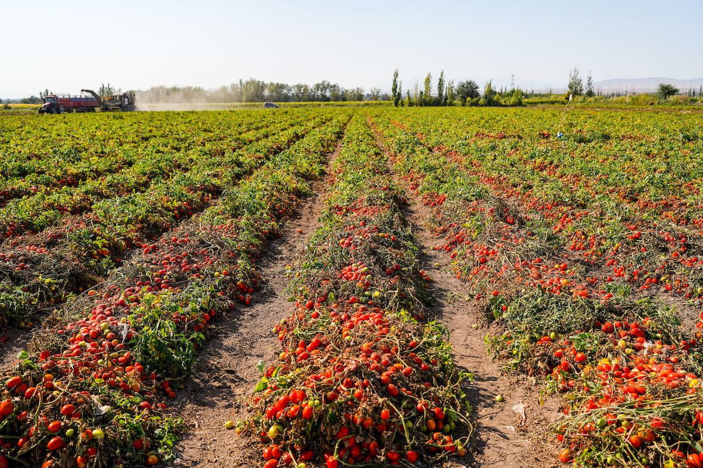
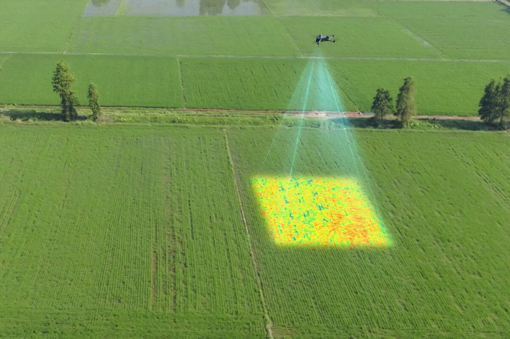
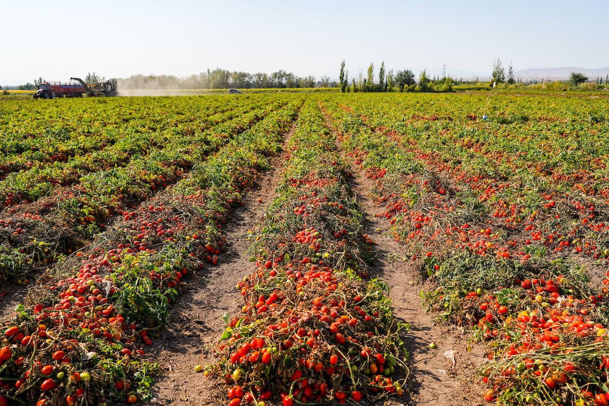
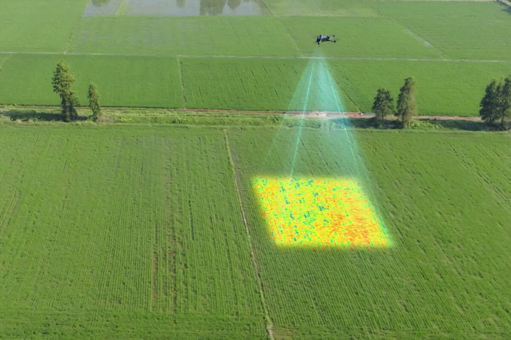

I Nostri Obiettivi
APPROVED
La qualità dei prodotti italiani
La qualità del prodotto italiano è riconosciuta. Tuttavia, questa qualità è minacciata da fenomeni come la contraffazione, la mancanza di trasparenza nella filiera, la difficoltà di tracciare l'origine dei prodotti e dallo spreco alimentare.
Trasparenza
Garantire la massima trasparenza nella filiera agroalimentare grazie ad una tecnologia avanzata e sicura.
Fiducia dei Consumatori
Fornire un facile accesso a informazioni verificabili riguardo all'origine dei prodotti.
Certificazione
Nuova soluzione di certificazione dedicata al fine di ridurre i rischi di frode alimentare.
Riduzione Perdite Alimentari
Ridurre lo spreco alimentare del 40% grazie al nuovo processo distributivo e package.
 


